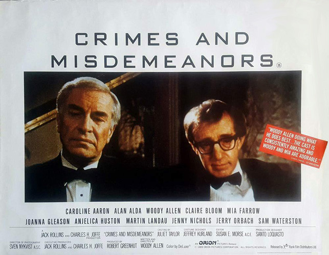
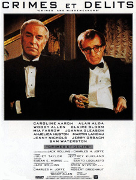
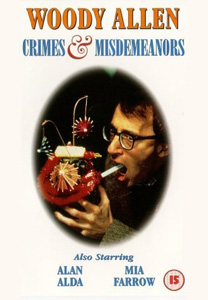
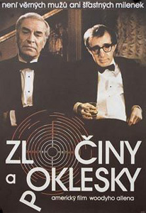

|
||||
Crimes and Misdemeanors (1989) |
||||
 |
||||
Director |
- |
Woody Allen | ||
Producers |
- |
Robert Greenhut Jack Rollins Charles H. Joffe |
||
Screenplay |
- |
Woody Allen |
||
Cinematography |
- |
Sven Nykvist | ||
Production Designer |
- |
Santo Loquasto | ||
Costume Designer |
- |
Jeffrey Kurland | ||
Editor |
- |
Susan E. Morse | ||
Cast |
||||
Judah Rosenthal |
- |
Martin Landau | ||
Cliff Stern |
- |
Woody Allen | ||
Halley Reed |
- |
Mia Farrow | ||
Dolores Paley |
- |
Anjelica Huston | ||
Lester |
- |
Alan Alda | ||
Jack Rosenthal |
- |
Jerry Orbach | ||
Wendy Stern |
- |
Joanna Gleason | ||
Miriam Rosenthal |
- |
Claire Bloom | ||
Ben |
- |
Sam Waterston | ||
Barbara |
- |
Caroline Aaron | ||
Police Detective |
- |
Victor Argo |
||
Lisa Crosley |
- |
Daryl Hannah (uncredited) | ||
Party Guest |
- |
Mercedes Ruehl (uncredited) | ||
Plot |
||||
The film is set in 1980s New York City and follows two main characters: Judah Rosenthal, a successful ophthalmologist, and Clifford Stern, a small-time documentary filmmaker. The two men are each confronted with moral crises. Judah, a respectable family man, is having an affair with flight attendant Dolores Paley. After it becomes clear to her that Judah will not end his marriage, Dolores, scorned, blackmails Judah, threatening to tell his wife of their affair. Frustrated and desperate, Judah has her killed by a hitman. Before her corpse is discovered, Judah retrieves letters and other items from her apartment (where he sees her bloody corpse) in order to cover his tracks. Stricken with guilt, Judah turns to the religious teachings he had rejected, believing for the first time that a just God is watching him and passing judgment. Cliff, meanwhile, has been hired by his pompous brother-in-law, Lester, a successful television producer, to make a documentary celebrating Lester's life and work. Cliff grows to despise him. While filming and mocking the subject, Cliff falls in love with Lester's associate producer, Halley Reed (Mia Farrow). Despondent over his failing marriage to Lester's sister Wendy, he woos Halley. He clashes with Lester and when he completes his documentary it contains hilariously demeaning scenes (which Cliff thinks are simply accurate) comparing Lester with Mussolini and Francis the Talking Mule, side by side with candid clips of Lester yelling at his employees and clumsily making a pass at an attractive young actress. Lester is furious and fires Cliff. When Halley visits to comfort him, he makes a pass at her, which she gently rebuffs, telling him she isn't ready for another romance. Adding to Cliff's burdens, Halley leaves for London, where Lester is offering her a producing job; when she returns several months later, Cliff is is astounded to discover that she and Lester are engaged. Hearing that Lester sent Halley white roses "round the clock, for days" while they were in London, Cliff is crestfallen as he realizes he is incapable of that kind of ostentatious display. His last romantic gesture to Halley had been a love letter which, he admits with humour, he had mostly plagiarized from James Joyce. In the final scene, Judah and Cliff meet by happenstance at a wedding. Once deeply anguished by the murder he arranged, Judah has worked through his guilt and is enjoying life once more; the murder had been blamed on a drifter with a criminal record. He draws Cliff into a supposedly hypothetical discussion that draws upon his moral quandary. Judah says that with time, any crisis will pass; but Cliff morosely claims instead that one is forever fated to bear one's burdens for "crimes and misdemeanors". Judah cheerfully leaves the wedding party with his wife, and Cliff is left sitting alone, dejected. |
||||
Filming |
||||
| Due to the film's serious and realistic treatment of its plot and characters, it is considered by many to be Allen's most mature film. It appears to be heavily influenced by the films of Ingmar Bergman which is evident from its sombre tone and bleak themes, as well as little of the nostalgia that permeates many of Allen's films. There is also one key scene in which Judah relives a memory from his childhood while visiting his former home that is nearly identical, in terms of thematic intent and staging, to a scene from Bergman's Wild Strawberries. Additionally, the film's cinematographer is Bergman's long-time collaborator, Sven Nykvist. | ||||
Filming Locations |
||||
Filmed at various locations in New York including:- - Central Park; Tavern on the Green (Central Park at W. 67th Street); - Bleecker Street Cinema; Greenwich Village; - One Fifth Restaurant (1 Fifth Avenue); - Waldorf-Astoria Hotel (301 Park Avenue); - Long Beach, Long Island and Lincoln Tunnel, Weehawken, New Jersey. |
||||
Quotes |
||||
"The last time I was inside a woman was when I visited the Statue of Liberty." |
||||
Music |
||||
Rosalie (Cole Porter) |
- |
The Jazz Band |
||
Dancing on the Ceiling (Rodgers & Hart) |
- |
Bernie Leighton | ||
Taking a Chance on Love |
- |
Vernon Duke | ||
I Know That You Know |
- |
Bernie Leighton | ||
J.S.Bach - English Suite No. 2 in A minor |
- |
Alicia De Larrocha | ||
Home Cooking |
- |
The Hilton Ruiz Quartet | ||
Sweet Georgia Brown |
- |
Coleman Hawkins and His All-Star Jam Band |
||
I've Got You |
- |
Jacques Press & Frank Loesser | ||
This Year's Kisses |
- |
Ozzie Nelson and His Orchestra | ||
All I Do Is Dream of You |
- |
Nacio Herb Brown & Arthur Freed | ||
Schubert - String Quartet in G major |
- |
Juilliard String Quartet | ||
Murder He Says |
- |
Betty Hutton | ||
Beautiful Love |
- |
Victor Young, Wayne King and Egbert Van Alstyne |
||
Great Day |
- |
Bernie Leighton | ||
Star Eyes |
- |
Lee Musiker | ||
Because |
- |
Lee Musiker | ||
Crazy Rhythm |
- |
The Wedding Band | ||
I'll See You Again (Noel Coward) |
- |
The Wedding Band | ||
Cuban Mambo (Xavier Cugat) |
- |
The Wedding Band | ||
Polkadots and Moonbeams |
- |
The Wedding Band | ||
I'll Be Seeing You (Sammy Fain) |
- |
Liberace | ||
Reviews |
||||
"The movie generates the best kind of suspense, because it's not about what will happen to people - it's about what decisions they will reach." - Roger Ebert : Chicago Sun-Times "The movie's secret strength - its structure, really - comes from the truth of the dozens and dozens of particular details through which it arrives at its own very hesitant, not especially comforting, very moving generality." - Vincent Canby : New York Times |
||||
Additional Artwork |
||||
   |
||||